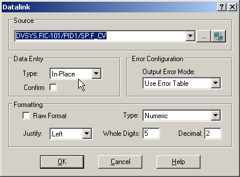

JavaScript must be enabled in order to use this site.Please enable JavaScript in your browser and refresh the page. Create a datalink for the loop setpoint Click the Datalink Stamper button. Enter the new parameter reference as FIC-101/PID1/SP. If you use the Parameter Browser, click the Up One Level button to go up to the module level. The system changes the parameter reference to DVSYS.FIC-101/PID1/SP.F_CV. The default node for all parameter references is DVSYS. In the Data Entry group, select In-Place for the Type. In-place data entry enables operators to change the value from the workstation.  In the Formatting group, select Numeric for the Type. Click OK. Tip: If you accidentally close the Datalink dialog before completing your selections, double-click the datalink on the picture to reopen the dialog. Place the datalink in the lower right quadrant of the screen. Use the text tool to add the label FIC-101/SP. (Remember, you access the Text tool by clicking Text button in the Toolbox.